Material Design и AngularJS
<< Назад
Категория: Front-End / Дата создания: 12.01.2015 / Последняя правка: 12.01.2015
Ни для кого не секрет, что Google повсюду в своих продуктах внедряет так называемый material design. Как и любой другой стиль он имеет сторонников и противников. Не буду касаться этих споров. Если вам нравится данный подход, Google подготовил полную спецификацию и описание особенностей: Material Design.
Для любителей angularjs появилась библиотека с набором директив, реализующих графические компоненты и позволяющих создавать разметку в соответствии с принципами material design. О ней и пойдет рассказ.
Я постараюсь кратко показать некоторые особенности и недостатки, а также покажу небольшое приложение для демонстрации.
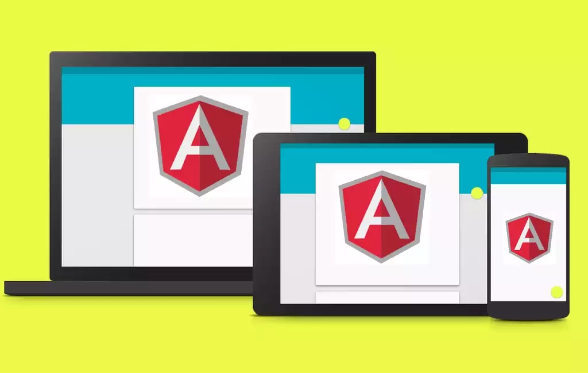
Что мы имеем?
1. Готовые компоненты:
Множество готовых angularjs директив для различных компонентов: кнопок, переключателей, вкладок. Все перечислять не буду, все это хорошо освещено в
документации, покажу лишь основной принцип:
Вам нужна круглая кнопка?
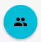
Используем готовую директиву, т.е. пишем:
<md-button class="md-fab md-primary" md-theme="cyan" aria-label="Profile">
<md-icon icon="/img/icons/ic_people_24px.svg" style="width: 24px; height: 24px;"></md-icon>
</md-button>
Если нужно добавить всплывающую подсказку, тоже все предусмотрено:
<md-button class="md-fab md-primary" md-theme="cyan" aria-label="Profile">
<md-icon icon="/img/icons/ic_people_24px.svg" style="width: 24px; height: 24px;"></md-icon>
<md-tooltip>
Photos
</md-tooltip>
</md-button>
Нужны переключатели?
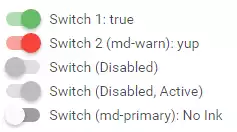
<div class="inset" ng-controller="SwitchDemoCtrl">
<md-switch ng-model="data.cb1" aria-label="Switch 1">
Switch 1: {{ data.cb1 }}
</md-switch>
<md-switch ng-model="data.cb2" aria-label="Switch 2" ng-true-value="'yup'" ng-false-value="'nope'" class="md-warn">
Switch 2 (md-warn): {{ data.cb2 }}
</md-switch>
<md-switch ng-disabled="true" aria-label="Disabled switch">
Switch (Disabled)
</md-switch>
<md-switch ng-disabled="true" aria-label="Disabled active switch" ng-model="data.cb4">
Switch (Disabled, Active)
</md-switch>
<md-switch class="md-primary" md-no-ink aria-label="Switch No Ink">
Switch (md-primary): No Ink
</md-switch>
</div>
Все это удобным образом связывается с данными:
.controller('SwitchDemoCtrl', function($scope) {
$scope.data = {
cb1: true,
cb4: true
};
});
Удобно? Конечно!.. Но только когда вам достаточно стандартных опций, которых не так уж и много. Заходите сделать какую-то особенность — и сразу все плюсы теряются.
2. Разметка
Для того, чтобы создавать адаптивную разметку, предусмотрено почти все необходимое. Вы можете создавать колонки, строки, вкладывать эти элементы друг в друга. Можно указывать как отображаться элемента при разных размерах экранов, все это реализовано вполне удобно. Рекомендую ознакомиться с
примерами.
3. Темы
Еще одна особенность — возможность описывать темы. Темы можно менять динамически с помощью директив или в контроллере. Изначально темы уже описаны для всех основных цветов используемых в Material Design.
Подробнее.
Пример приложения
Лучший способ понять преимущества и недостатки чего-либо — использовать это. Я сделал небольшой демонстрационный проект. Это небольшое приложение, здесь я не использовал удаленный REST сервис [соответственно, вносимые изменения нигде не отобразятся], чтобы сосредоточиться непосредственно на angularjs и возможностях material-angular.
Я сделаю простой редактор, в котором можно, нажав на плавающую кнопку, добавить задание, выбрав которые можно отметить, после чего они будут перенесены в архив.
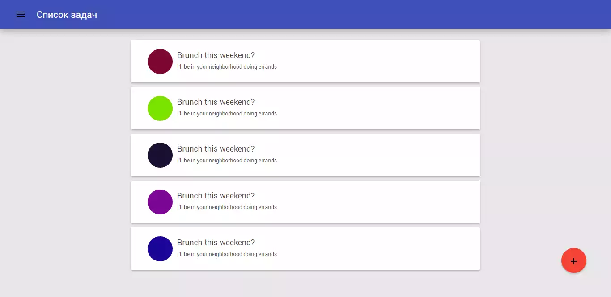
live demo
проект на github
Для начала создадим angular проект на базе angular-seed. Здесь я не буду рассказывать про ngRroute и ngView, кто работал с angularjs — это знают (если не знакомы с angularjs, прошу
сюда).
Нам понадобится верхний toolbox:
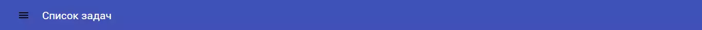
Для этих целей предусмотрен соответствующий элемент:
<md-toolbar md-theme="indigo" class="app-toolbar md-indigo-theme md-whiteframe-z2 fix-top" >
<div class="md-toolbar-tools" tabindex="0">
<md-button class="menu-icon nornal-btn" ng-click="toggleRight()" aria-label="Toggle Menu">
<md-tooltip >
Меню
</md-tooltip>
<md-icon icon="img/icons/ic_menu_24px.svg"></md-icon>
</md-button>
Список задач
</div>
</md-toolbar>
Также нужно сделать слева выдвижное меню, для этого тоже все предусмотрено:
<md-sidenav class="md-sidenav-left md-whiteframe-z2" md-component-id="left">
<div ng-controller="LeftCtrl" ng-click="close()">
<md-toolbar md-theme="indigo">
<h1 class="md-toolbar-tools">Меню</h1>
</md-toolbar>
<md-content >
<a class="menu-item menu-sub-item md-menu-item" ng-click="menu.toggleSelectPage(page)" ng-repeat="page in menu.pages" ng-href="#{{page.url}}" md-highlight="menu.isPageSelected(page)" md-ink-ripple="#bbb">
<span > {{page.discription}} </span>
</a>
</md-content>
</div>
</md-sidenav>
Для управления открытием можем использовать следующий код:
.controller('MainCtrl', function($scope, $timeout, $mdSidenav) {
$scope.toggleRight = function() {
$mdSidenav('left').toggle();
};
...
});
Таким образом, мы получили основной каркас. Теперь наполнение — это часть, которая будет изменятся при переходе между страницами. Наш view, в котором я буду отображать список задач:
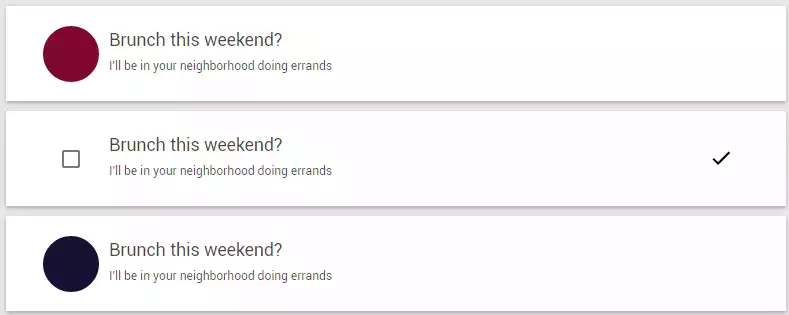
Можно либо сразу отметить задачу как выполненную, либо при наведении на кружок появляется checkbox и мы можем отметить несколько записей одновременно, после выделения хотя бы одной записи верхний toolbox меняет свой вид. Поскольку основной toolbox находится не во view, то было принято решение просто выводить другой toolbox поверх заданного в каркасе.
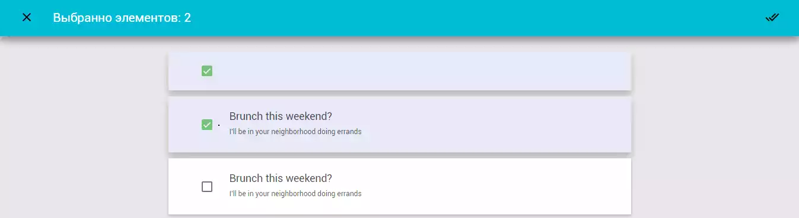
Добавление новых элементов. Было принято решение вызывать диалоговое окно, в котором можно задать параметры.
Тут я поясню некоторую особенность, которая позволяет очень гибко управлять окнами. Данным фреймворком можно создавать как простые окна, так и сложные: для этого создается отдельная html страница, которая является шаблоном для модального окна.
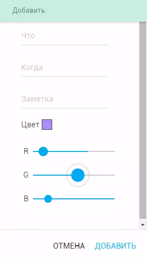
При создании своего окна для управления создается контроллер, который будет обрабатывать и передавать данные из окна.
<div class="md-actions" layout="row">
<md-button ng-click="cancel()">
Отмена
</md-button>
<!-- Вот здесь выполняется передача данных с окна-->
<md-button ng-click="answer(todo)" class="md-primary">
Добавить
</md-button>
</div>
Код контроллера управляющего окном:
function DialogController($scope, $mdDialog) {
...
$scope.hide = function() {
$mdDialog.hide();
};
$scope.cancel = function() {
$mdDialog.cancel();
};
$scope.answer = function(answer) {
$mdDialog.hide(answer);
};
}
Тогда само окно может вызываться в коде следующим образом:
$mdDialog.show({
controller: DialogController,
// вот здесь указывается путь к странице описывающей вид нашего модального окна
templateUrl: 'dialog.tmpl.html',
targetEvent: ev,
})
.then(function(answer) {
// answer это то что было передано из нашего окна
// и здесь происходит вся последующая обработка данных
});
Я не стал подробно описывать как все реализовано, чтобы не нагромождать кучей довольно простого кода, только выделил моменты, касающиеся material angular. Все остальное вы можете посмотреть на
github.
Впечатления и выводы
Изначально я подумал, что появилась замечательная возможность разрабатывать angular приложения с material design, однако немного поработав могу однозначно сказать: использовать еще рано (на момент написания версия 0.6). Содержится множество мелких багов, некоторые элементы отображаются по-разному в различных браузерах и постоянно приходится подстраивать стили вручную.
На данный момент множество проблем с отображением в различных браузерах. Проблем много (столкнулся при написании демонстрационного проекта), покажу только несколько (это примеры с официального сайта проекта, открытые в разных браузерах).
Значки на кнопках:
(Google Chrome):
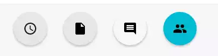
(Internent Exprorer 11):
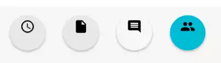
Диалоговые окна:
(Google Chrome):
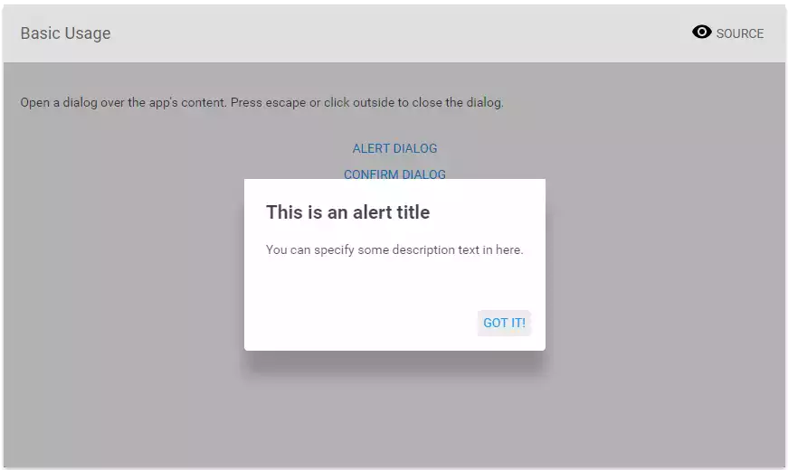
(Internent Exprorer 11):
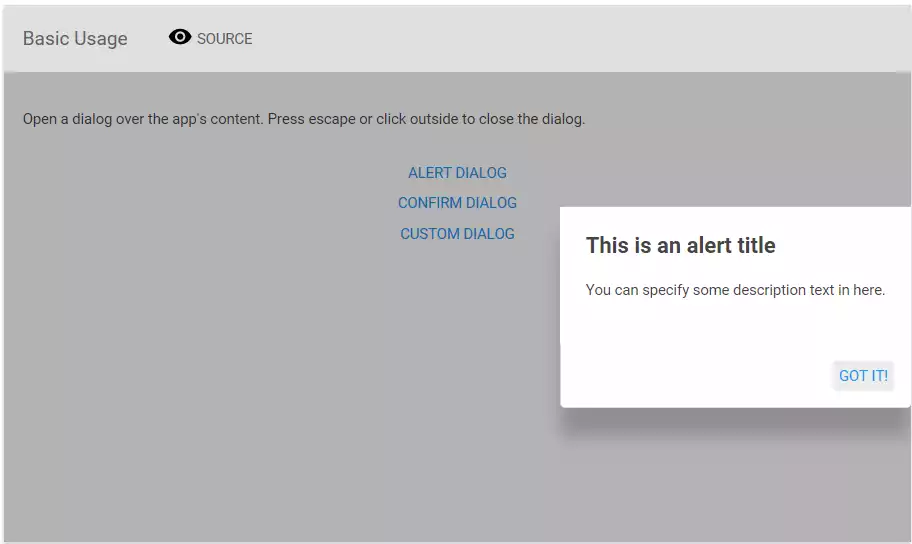
Дальше показывать косяки, думаю, не имеет смысла, они есть, и их много, а это значит, что вам придется вручную все поправлять.
Также к недостаткам можно отнести, что не сделано ничего дня поддержки различных анимаций. В Material Design много уделяют этому
вопросу . Но все это придется делать именно вам.
Пока сложно сказать, как скоро будут исправлены недостатки, но на данном этапе для использования angular material явно не готов.
Ссылки
Оригинал моей статьи на Habrahabr.ru